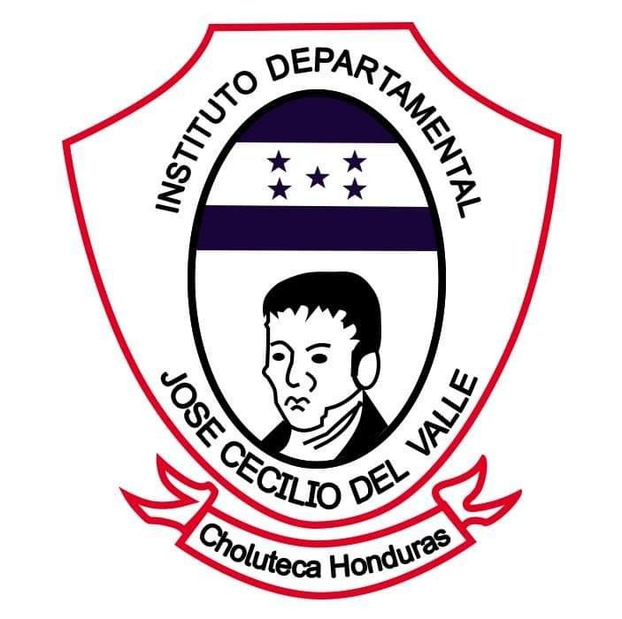
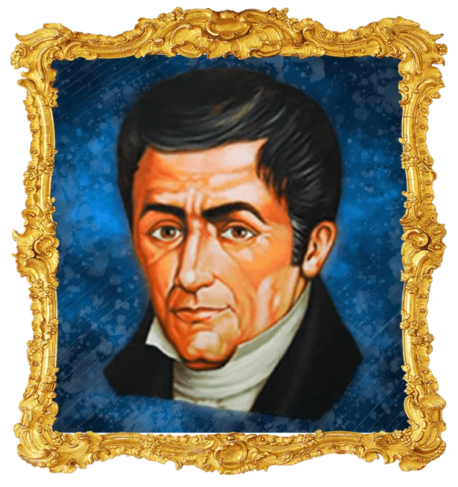
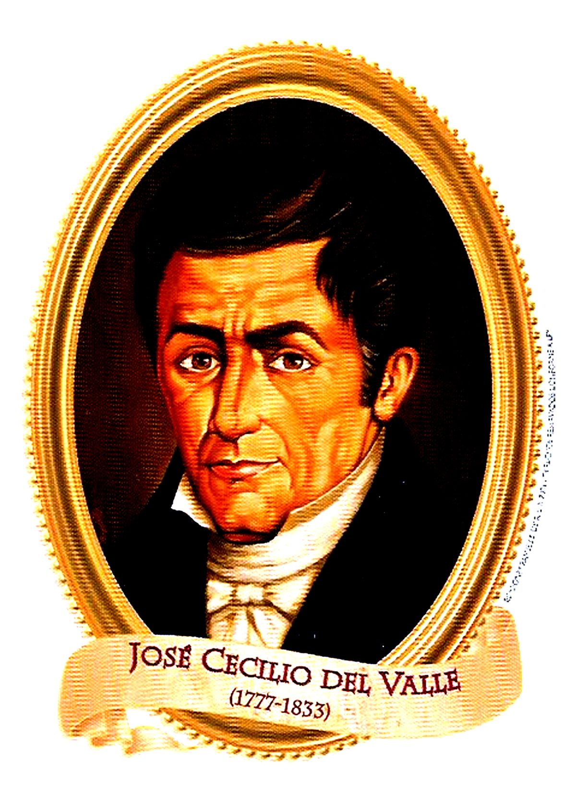
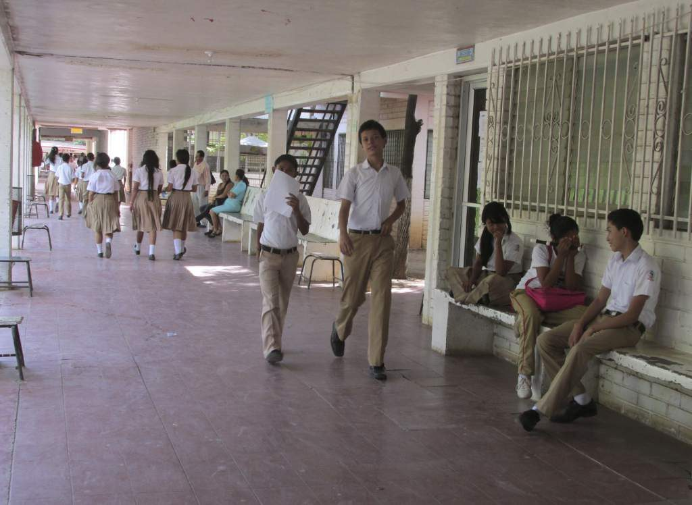
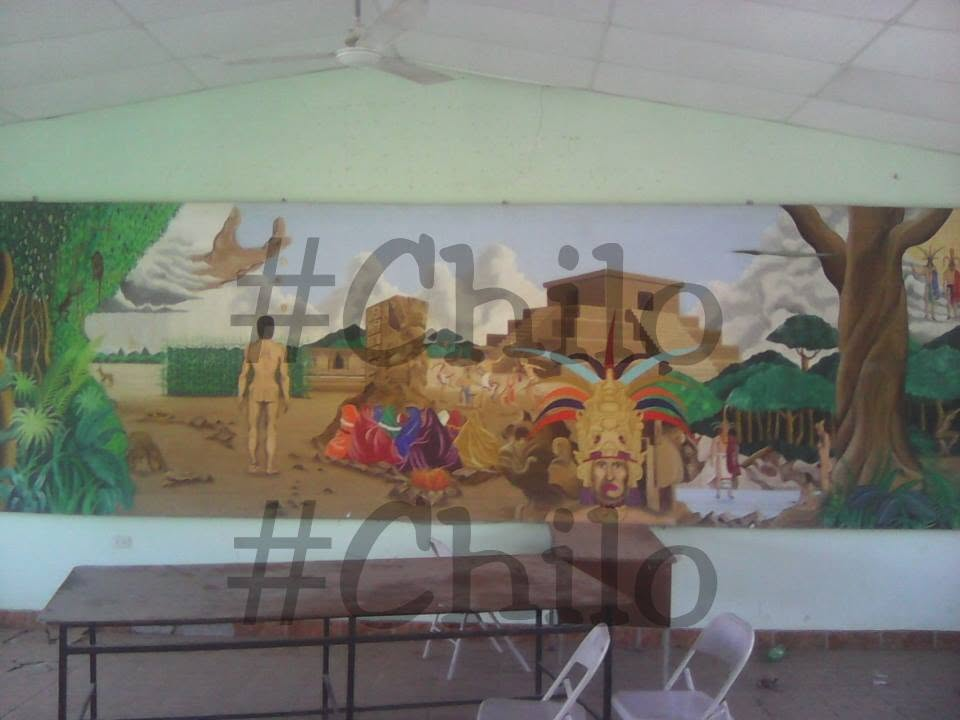
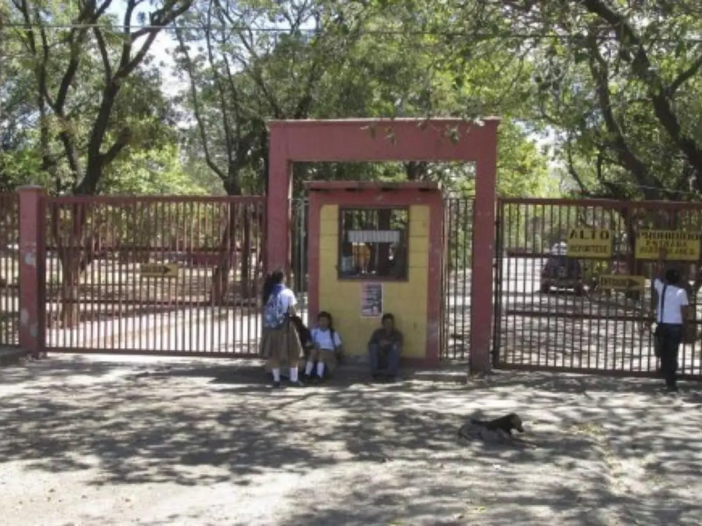
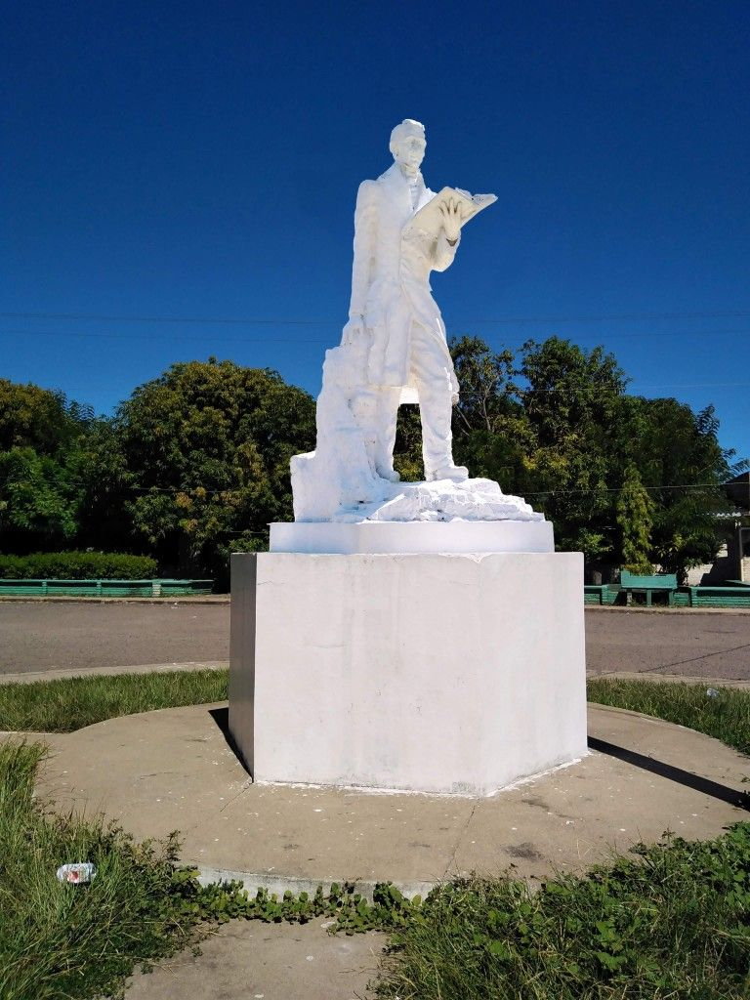

01
Educación Básica
Formación correspondiente al III Ciclo de Educación Básica.
- 7.º grado
- 8.º grado
- 9.º grado

Educación que forma, transforma y construye futuro
Instituto José Cecilio del Valle
Educación básica y media con formación académica, técnica y humana.
Conoce nuestras carreras
El Instituto José Cecilio del Valle es una institución educativa comprometida con la formación integral de sus estudiantes.
Nuestro objetivo es brindar conocimientos, valores y herramientas que permitan a los jóvenes prepararse para los desafíos del futuro.
“La educación es el camino que abre nuevas oportunidades.”

El Instituto José Cecilio del Valle es una institución educativa de amplia trayectoria en la ciudad de Choluteca, Honduras. Sus antecedentes se remontan a la década de 1920, época en la que surgieron importantes iniciativas para fortalecer la educación y brindar nuevas oportunidades de formación a los jóvenes de la región sur del país. La creación y consolidación del instituto estuvieron relacionadas con el esfuerzo de ciudadanos y educadores de Choluteca interesados en impulsar la educación media. Durante sus primeros años, la institución funcionó en diferentes instalaciones de la ciudad, hasta establecerse posteriormente en el lugar donde actualmente desarrolla sus actividades educativas. A lo largo de su trayectoria, el Instituto José Cecilio del Valle ha contribuido a la formación de numerosas generaciones de estudiantes, fortaleciendo su oferta educativa y participando en el desarrollo académico, social y cultural de Choluteca. En la actualidad, el instituto continúa comprometido con la formación integral de sus estudiantes, ofreciendo educación básica y media y diferentes opciones de formación que buscan preparar a los jóvenes para continuar sus estudios superiores, incorporarse al mundo laboral y contribuir al desarrollo de su comunidad.
Entre los acontecimientos más importantes en la trayectoria del Instituto José Cecilio del Valle se encuentra su surgimiento durante la década de 1920, como resultado del interés de ciudadanos y educadores de Choluteca por fortalecer la educación media en la región. A lo largo de los años, la institución pasó por diferentes etapas de crecimiento y consolidación, incluyendo cambios de instalaciones y la ampliación progresiva de sus oportunidades educativas. Su trayectoria ha permitido la formación de numerosas generaciones de estudiantes, contribuyendo al desarrollo académico y social de Choluteca. Con el paso del tiempo, el instituto ha continuado adaptándose a las necesidades educativas de cada generación, incorporando nuevas opciones de formación y fortaleciendo su compromiso con la preparación académica y profesional de los jóvenes. En la actualidad, el Instituto José Cecilio del Valle continúa formando estudiantes de educación básica y media, manteniendo su compromiso con la educación, los valores y el desarrollo de la comunidad.
El instituto brinda formación en diferentes niveles educativos.
Formación correspondiente al III Ciclo de Educación Básica.
Formación académica y profesional para preparar a los estudiantes para la universidad y el mundo laboral.
Descubre las diferentes opciones de formación que ofrece nuestra institución.
Formación técnica relacionada con informática, programación y tecnología.
Formación relacionada con contabilidad, administración financiera y gestión.
Formación orientada al sector hotelero, turístico y de servicios.
Formación enfocada en salud, nutrición y atención comunitaria.
Formación académica orientada a continuar estudios en el nivel universitario.
Formación técnica relacionada con procesos, producción y control de calidad.
Brindar una educación integral y de calidad que contribuya a la formación académica, técnica y humana de los estudiantes, fortaleciendo sus conocimientos, habilidades, valores y capacidades para desenvolverse responsablemente en la sociedad y contribuir al desarrollo de su comunidad.
Ser una institución educativa reconocida por la formación integral de sus estudiantes, comprometida con la excelencia académica, la innovación, los valores y la preparación de jóvenes capaces de enfrentar los desafíos del futuro y contribuir positivamente al desarrollo de Honduras.
El Instituto José Cecilio del Valle promueve valores fundamentales para la formación integral de sus estudiantes, fomentando el respeto, la responsabilidad, la honestidad, la solidaridad, la disciplina, el compromiso y el trabajo en equipo. Estos valores contribuyen al desarrollo de jóvenes con principios, capaces de relacionarse de manera positiva con los demás, asumir responsablemente sus deberes, trabajar por sus metas y participar activamente en el bienestar de su comunidad.
Conoce algunos espacios y momentos de nuestra institución.




Conoce nuestra ubicación y nuestros principales medios de contacto.
Instituto José Cecilio del Valle
Choluteca, Honduras
+504 9979-4575
Contactar por WhatsApp@institutojcvcholuteca
Visitar InstagramInstituto JCV Choluteca
Visitar Facebook